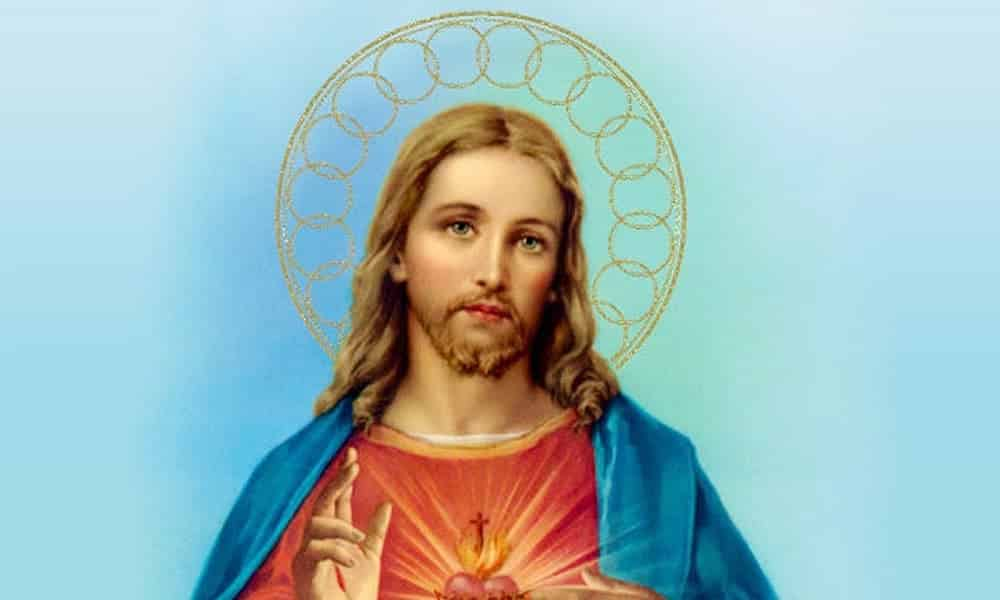

O que é:
O EJC tem na sua história o sonho do jovem garoto chamado Roni Valim, que fez o CLJ (Curso de Liderança Juvenil) pela Arquediocese de Porto Alegre. Com o coração ardendo pelo amor à Deus, o criador, e tendo a vontade de transformar a realidade de nosso litoral, Roni Valim teve sua ideia amadurecida e, juntamente com o padre Arno, de Terra de Areia, montou o EJC (Encontro de Jovens com Cristo), se baseando na realidade litorânea e também nas experiências vividas no CLJ e no curso de EMAÚS. Com vontade de mudar o mundo e cheio do amor de Cristo, Roni Valim fez nascer o Encontro.
O objetivo:
EJC é ser mais do que um retiro de 3 dias, é ter vivências durante todo o ano, é ser movimento. Mostrando a face jovem da Igreja. O Movimento leva o nome do EJC para todos os lugares como forma de carinho e acolhimento. Assim, o EJC mostra que os integrantes são, além de amigos, uma verdadeira família.